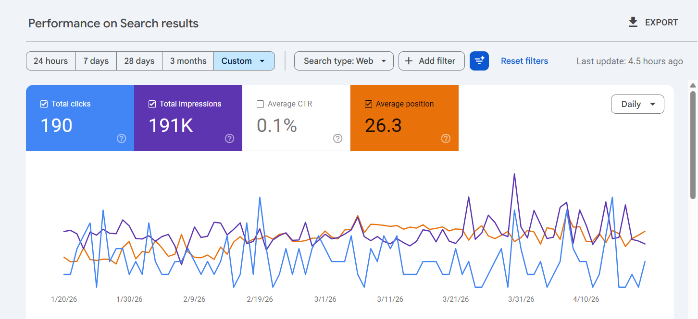
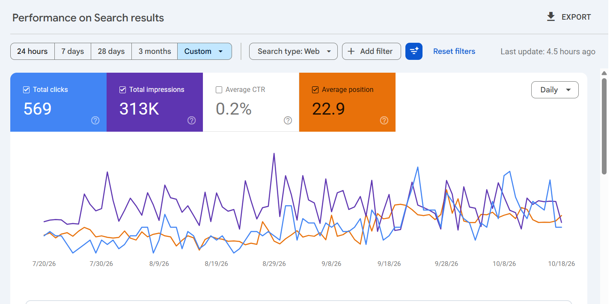
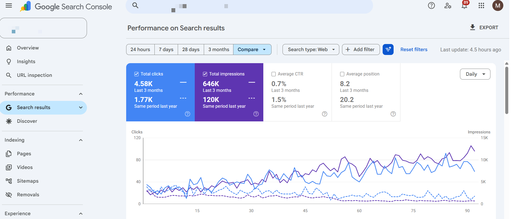
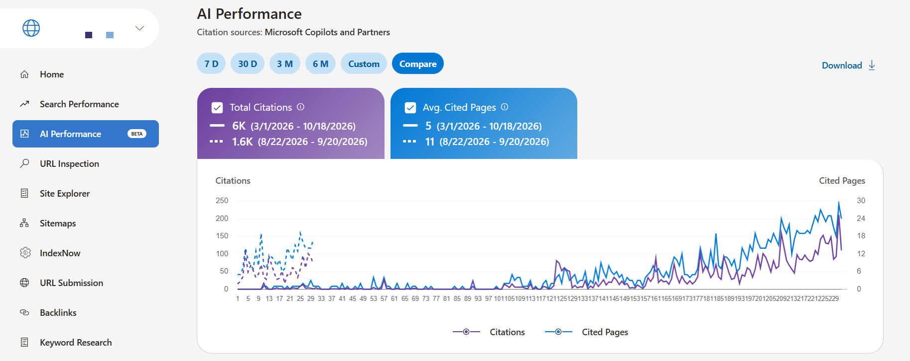

SEO Results: Search Console Proof
Mark Edcel Lopez · Technical SEO & AI Search · Screenshots dated October 2026
Unedited Google Search Console and Bing Webmaster Tools screenshots from clients I worked on myself. Client names are blurred for confidentiality. Each before/after pair compares periods of the same length.
Client A: Bathroom renovation company, Ottawa
Google Search Console · Nov 20, 2025 – Feb 18, 2026 vs. Jul 20 – Oct 18, 2026
| Metric | Before | After | Change |
|---|---|---|---|
| Clicks | 204 | 575 | +182% |
| Impressions | 22.3K | 87.7K | +293% |
| Average position | 27.9 | 17.3 | 10.6 positions higher |


Client B: HVAC company, Ontario
Google Search Console · Jan 20 – Apr 19, 2026 vs. Jul 20 – Oct 18, 2026
| Metric | Before | After | Change |
|---|---|---|---|
| Clicks | 190 | 569 | +199% |
| Impressions | 191K | 313K | +64% |
| Average position | 26.3 | 22.9 | 3.4 positions higher |


Client C: E-commerce brand
Google Search Console · Last 3 months vs. same period last year · Bing AI Performance · Mar 1 – Oct 18, 2026
| Metric | Same period last year | Last 3 months | Change |
|---|---|---|---|
| Clicks | 1.77K | 4.58K | +159% |
| Impressions | 120K | 646K | +438% |
| Average position | 20.2 | 8.2 | 12 positions higher |
| Microsoft Copilot citations | 6K total (Mar 1 – Oct 18, 2026) | ||

